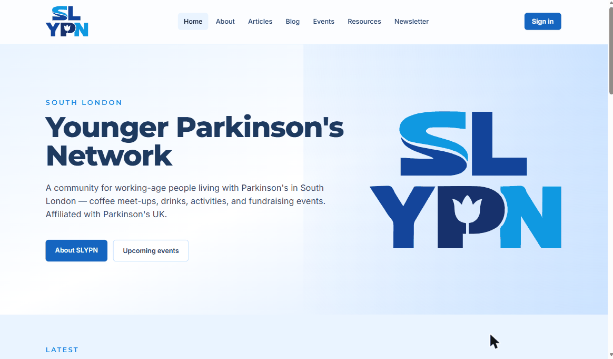
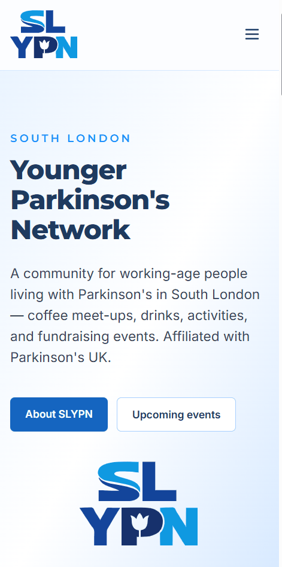
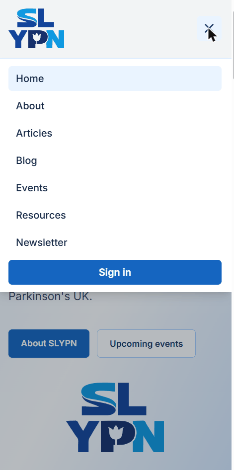

Technical review · September 2026
SLYPN
The South London Younger Parkinson's Network website — a community site for working-age people living with Parkinson's.
Built as a full production system on Azure: a Vue single-page app, a .NET 8 serverless API, invite-only identity, an in-house editorial workflow, and end-to-end observability. Running cost: 18p a month.
Key features · 01
What a visitor can do
Everything public is reachable without an account, and without JavaScript-gated content.
Articles & blog
Category filters, automatic reading-time estimates, previous/next navigation, and deep-linkable blog posts that render in full on the index.
Events
List or calendar view of coffee mornings, drinks and activities. Reveals the next three months, then loads more on scroll. Past events keep their own archive.
Resources
Curated links grouped by category — support services, exercise, research — filterable in one click.
Newsletter
Anonymous email sign-up plus a browsable archive of 54 back issues, each with its original document attached.
Consent-first telemetry
The cookie banner genuinely gates analytics. Decline or ignore it and the monitoring SDK is never initialised at all.
Built to be usable
Keyboard-navigable menus, ARIA labelling throughout, explicit image dimensions to stop layout shift, and a retry action on every failure state.
Live content today: 10 articles, 10 blog posts, 60 events, 7 resources and 54 newsletters — 141 items, measured from the public API.
Key features · 02
What members and admins can do
Three roles, each unlocking a different part of the same interface. Membership is invite-only — you cannot self-register.
Member
Signs in and sees the dashboard. No authoring rights.
Contributor
Writes and edits their own articles, blog posts and events. Everything they submit needs approval.
Admin
Approves or returns submissions, manages members, subscribers, resources, newsletters and all content.
A real editor, in the browser
- Autosaves 1.5 s after you stop typing — and skips the write entirely when nothing actually changed.
- Reading time calculates itself from the word count.
- Conflict-safe. Two people editing the same draft get a clear "keep mine / take theirs" choice rather than silent data loss.
- Warns before you navigate away from unsaved work.
An approvals queue that explains itself
- Submissions grouped by author, each expandable to read in place.
- Returning work for revision requires written feedback — no silent rejections.
- Deletion is a request, not an action, for contributors; the item stays live until an admin agrees.
- Live badge counts in the nav so nothing sits unnoticed.
Key features · 03
Mobile and desktop, one codebase
There is no separate mobile app and no m. subdomain — the same URL adapts to the screen
it lands on. Most of the community reaches the site from a phone.



77 responsive rules across 21 components. Columns collapse, the hero stacks, and the logo moves below the text rather than shrinking to nothing.
Two independent drawers — pages and account. They overlay the page rather than pushing it, and close on Escape or a tap outside. Each toggle reports aria-expanded.
Images declare their dimensions, so nothing jumps while loading. Events and Articles keep filters and scroll position on the way back from a detail page.
Key features · 04
The editorial workflow
Publishing is a state machine, and each transition names who is allowed to trigger it.
Technologies
What it's built from, and why
| Layer | Choice | Why this one |
|---|---|---|
| Frontend | Vue 3 · TypeScript · Vite · Pinia · Tailwind | Small, fast, and typed end to end. Auth-only screens are code-split so anonymous visitors never download the editor. |
| Editor | TipTap | Structured rich text rather than raw HTML, so what an author can produce is bounded by the toolbar. |
| API | .NET 8 isolated-worker Azure Functions | Serverless, scales to zero, and ships inside the Static Web App as managed functions — one deployment, not two. |
| Data | Azure Table Storage + Blob Storage | Pennies per gigabyte. A provisioned database would have cost more per month than the entire rest of the system. |
| Identity | Entra External ID (CIAM) · MSAL.js | Email, Google and Facebook sign-in without hand-rolling auth. Public client with PKCE — no secret in the browser. |
| Hosting | Azure Static Web Apps (Free) | Global CDN, free TLS, managed custom domains, and per-pull-request preview environments out of the box. |
| Observability | Grafana Cloud · Faro + OpenTelemetry | Vendor-neutral OTLP throughout. Moving off Grafana means changing one endpoint URL. |
| Infrastructure | Bicep | The whole resource group is one declarative file that can be re-deployed from scratch. |
| CI/CD | GitHub Actions · SonarCloud | Free for public repositories, with preview deploys and static analysis on every pull request. |
Roughly 21,700 lines of application code — 9,200 in the web app, 12,500 in the API — across 24 screens, 32 shared components and 47 API functions on 34 routes.
Architecture · Level 1 — context
The system and everything around it
Architecture · Level 2 — containers
What actually runs
Architecture · Level 3 — one authorised request
How an admin action is authorised
Architecture · data
Seven tables, keyed to how they're read
Table Storage only sorts by partition and row key, so each partition key is chosen to make the commonest query a single-partition lookup.
| Table | Partition key | Body | Why |
|---|---|---|---|
articles | status | Blob | Public reads are almost all "published" — one partition serves them. |
drafts | authorId | Blob | The only query that matters is "my drafts". |
events | yearMonth | — | Listing is by date range; this month plus next is two partitions. |
resources | category | — | The page filters by category, so the key matches the filter. |
newsletters | constant | Blob | About twelve issues a year — one partition is plenty. |
members | constant | — | Small, and read on every authorised request. |
subscribers | constant | — | Deliberately separate from members, so subscribing can never look like an invitation. |
A table property caps at 64 KB. Rich article HTML lives in a blob keyed by content id — so it never moves when the status changes.
Every write carries the row's ETag. A stale write is refused rather than silently overwriting someone else's edit.
11 MB total across both services — 141 published items including every newsletter attachment.
Security
Controls in place
Invite-only by construction
A sign-up attempt calls back into the API before any account is created. An address that was never invited is refused at that point — subscribing to the newsletter is not an invitation.
Roles from live state
Permissions are read from the members table per request, replacing whatever the token claims. Revoking access is immediate.
Sanitised on the way in
Submitted HTML is filtered to exactly the tags the editor's toolbar can produce. Inline styles are dropped; only http, https and mailto links survive.
Bounded before buffering
Size is checked from the declared length before the body is read — 5 MB for images, 25 MB for newsletter files. Images must be PNG, JPEG or WebP.
Nothing publicly readable
Both blob containers are private. Media is served through short-lived signed URLs that expire after fifteen minutes.
The API refuses to start unsafe
If the local auth bypass is ever enabled somewhere that looks like a real deployment, the host throws on startup rather than serving unauthenticated traffic.
No secrets live in source control. Static analysis runs on every pull request via SonarCloud, and the repository has private security advisories enabled for coordinated disclosure.
Infrastructure
Two resources, one file
The entire production environment is declared in a single Bicep template and can be rebuilt from an empty resource group.
- Static Web App — Free tier, West Europe, wired to the GitHub repo
- Storage account — Standard LRS, UK South, TLS 1.2 minimum, no public blob access
- Two blob containers —
mediaandcontent, both private - Custom domain — validated by CNAME delegation, certificate issued and renewed automatically
- Identity tenant — Entra External ID lives outside the resource group
- Grafana Cloud stack — created once, referenced by endpoint
- DNS records — must exist before deployment, or domain validation fails the whole thing
- Secrets — set through a scripted phase, never committed
rg-slypn-prod
Why two regions? Azure offers Static Web Apps in only five regions and UK South is not one of
them, so the app sits in West Europe — the nearest available. Storage stays in UK South, so member and
subscriber data rests in the UK. The static site itself is served from Azure's global CDN either way.
The Free tier has no managed identity, so the API authenticates to storage with a connection string.
That is a deliberate, documented trade-off rather than an oversight — it is the price of the tier.
Build and release
The pipeline
Deployment
Releasing and rolling back
- Merge is the release. No manual deploy step, no release branch.
- Three to five minutes from merge to live.
- Versioned builds — production carries the package version, previews carry the PR number and commit.
- Environment-aware — previews report themselves as
devin telemetry so their traffic never pollutes production dashboards.
- Revert the pull request — redeploys the previous bundle in about three minutes.
- Or restore a previous deployment from the Azure portal directly.
- Data is unaffected by either. Content lives in storage, not in the deployment.
- Infrastructure rolls back by redeploying an earlier version of the Bicep file.
Observability
Knowing when something breaks
Both halves of the system report to the same place, using open standards rather than a proprietary agent.
Grafana Faro
- JavaScript errors with readable stack traces
- Core Web Vitals — loading, responsiveness, layout stability
- Session counts and which screen a person was on
- Initialised only after cookie consent — decline and it never loads
OpenTelemetry
- Traces spanning the request and its storage calls
- Request rate and latency, broken down per route
- Structured logs correlated to the trace that produced them
- .NET runtime health — garbage collection, heap size
Quality
What stops a bad change
Enforced, not advisory
Combined coverage below 80% fails the build with its own exit code. 80–89% is reported as satisfactory, 90% and above as good.
Against a real API
Browser tests run against a live Functions host and a real storage emulator — not mocks — covering sign-in guards, the full publishing workflow and every admin console.
SonarCloud on every PR
Both languages analysed together with the coverage reports from the test jobs, so quality and coverage are judged on the same run.
Type checking runs as part of the production build rather than as a separate step, so a type error cannot reach main even if the tests pass.
Running costs · what we actually pay
Today: 18p a month
Azure Cost Management, for the 30 days to 4 September 2026: £0.176 across both SLYPN resource groups — £0.12 for the identity tenant and £0.06 for hosting and storage. That is roughly £2.15 a year. Everything else sits inside a free allowance.
Measured usage against each free allowance
Storage transactions over the same 30 days: 55,677, of which the majority are automated test and deployment traffic rather than visitors. There is no live visitor telemetry yet — the site is deployed and serving, but has not been promoted, so every figure on the next slide beyond "today" is a projection. The subscription is Pay-As-You-Go with no spending limit, so nothing here is being absorbed by credit.
Running costs · what growth would cost
Where the free tiers actually run out
A first-time visitor downloads 354 KB — measured live, compressed, including the sign-in and monitoring libraries. Returning visitors download almost nothing. That number sets the ceiling.
| Scenario | New visits / month | Bandwidth of 100 GB | Azure | Grafana Cloud | Status |
|---|---|---|---|---|---|
| Today measured | <100 | 0.04 GB | £0.18 | £0 | Free |
| Local community, steady | 2,000 | 0.7 GB | ≈ £0.18 | £0 | Free |
| Regional reach | 20,000 | 6.8 GB | ≈ £0.20 | £0 | Free |
| Press or campaign spike | 100,000 | 34 GB | ≈ £0.30 | ≈ £45 | Watch |
| Sustained national | 300,000 | 101 GB | ≈ £7–25 | ≈ £165 | Over |
Monitoring, not Azure
Grafana's free 50,000 sessions run out at roughly a sixth of the traffic that troubles Azure. Past it, Pro is $19/month including 50k, then $0.75 per 1,000 — about £45/month at 100k sessions. Staying free instead simply stops collecting.
Bandwidth, at ~290,000 visits
100 GB divided by 354 KB. Beyond that the Standard tier is about £7 per month plus roughly 16p per additional GB — and buys an availability guarantee too.
Storage and identity
A hundredfold increase in content is around 1 GB, which costs pennies. Members are invited individually, so the 50,000 free monthly users will not be approached — though identity is already the larger half of today's 18p.
Basis: the £0.18 is Azure Cost Management actuals for the 30 days to 4 Sep 2026; volumes are from Azure Monitor and the live site; Grafana prices are from grafana.com/pricing. Everything beyond "today" is a projection at list prices, converted from US dollars — indicative, not a quote. Confirm against the Azure pricing calculator before budgeting. Realistic demand for a South London community group sits roughly two orders of magnitude below the first ceiling.
Where it stands
Built, deployed, and running for free
- Public site live on its custom domain with managed TLS
- Invite-only sign-in via email, Google or Facebook
- Full authoring and approval workflow in the browser
- 141 items of real content published
- 881 tests, enforced coverage, static analysis on every change
- Dashboards and alerting wired to both tiers
- Promote the site and start gathering real visitor telemetry
- Work through the remaining hardening backlog
- Decide a rotation cadence for the storage credential
- Revisit the tier only if traffic ever approaches the ceilings
Source, infrastructure and this deck all live in github.com/sinclapa/slypn.
South London Younger Parkinson's Network
Thank you
Questions welcome — about any of it, technical or otherwise.
Built for a community of working-age people living with Parkinson's in South London, and running on infrastructure that costs about £2 a year.
Built with
- Vue 3
- TypeScript
- Vite
- Tailwind
- .NET 8
- Azure
- GitHub Actions
- SonarQube
- Vitest
- Playwright
- Grafana
- OpenTelemetry